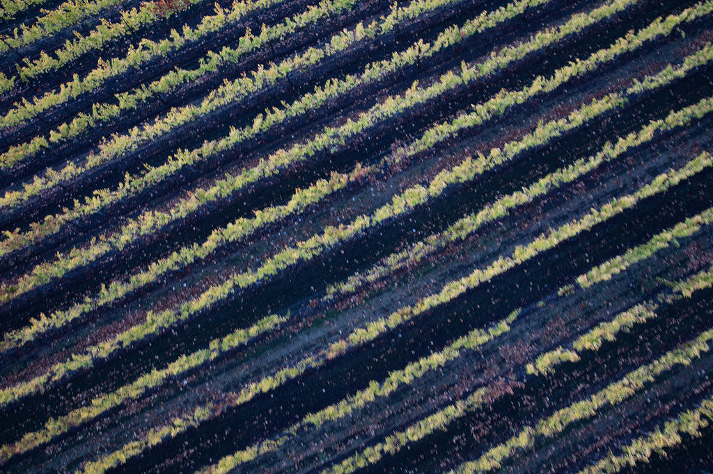

The new standard
Two ways to run the same hectare
The difference between standard practice and the Healthy Hectare model isn't ideology — it's how each one treats costs, soil, data, and proof.
| Standard approach | Healthy Hectare | |
|---|---|---|
| Input costs | Rising, reactive — each new problem answered with another purchased input. | Optimised and managed toward reduction, tracked season on season. |
| Soil | A depleting asset — declining function priced in as a cost of doing business. | An appreciating asset — soil function and resilience built and measured over time. |
| Data | Opaque and self-reported. | Open, measured, verifiable. |
| Approach | Reactive — test for residues after the fact. | Proactive — build measurable health from the start. |
| Evidence model | Marketing claims. | Baseline-to-outcome comparison — same farm, same conditions. |
What makes a standard
A standard is earned in the field, not proclaimed
Healthy Hectare doesn't ask the sector to take a new standard on faith. It builds one the slow way: a defined parcel, a measured baseline, four years of documented seasons, and a like-for-like comparison anyone can interrogate.
That is what separates a benchmark from a brand promise — and it's why the programme leads with its measurement design rather than its claims.

Get involved
Help set the benchmark
Farms, funders, researchers, and regulators each have a role in proving what the new standard can be.